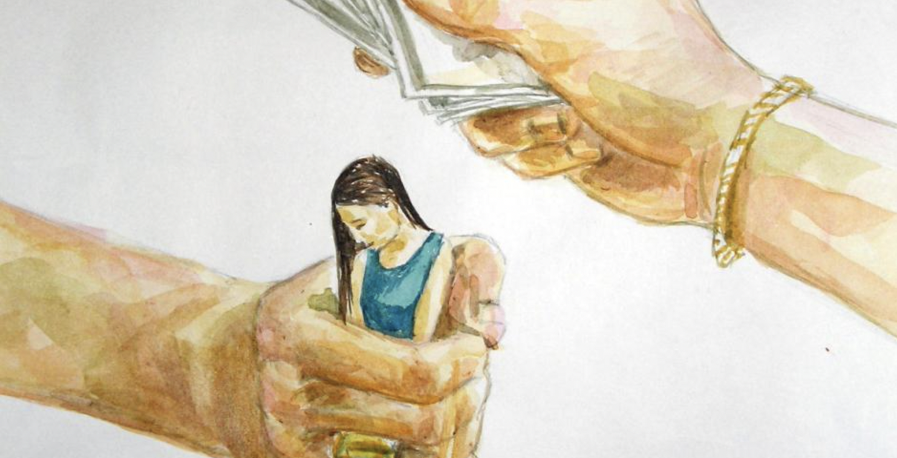
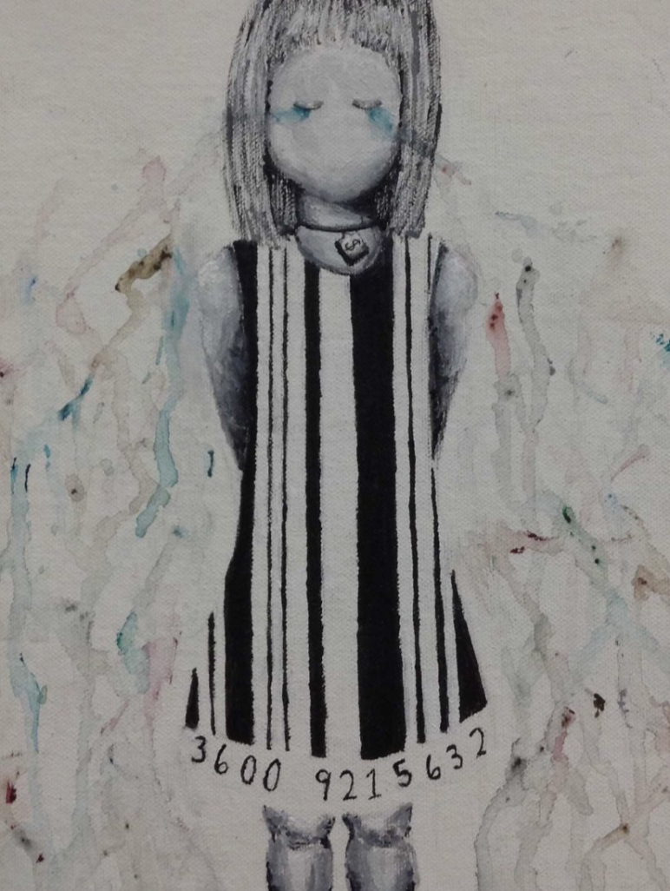

Hidden Numbers: An Exploration of Factors that Influence Human Trafficking Detection and Government Response in Europe

Human trafficking is the fastest growing criminal industry in the world. As defined by the United Nations Office on Drugs and Crime, human trafficking is the recruitment, transportation, transfer, harboring or receipt of people through force, fraud or deception, with the aim of exploiting them for profit. 27.6 million people worldwide are estimated to be victims of human trafficking at this moment, but given the complex and underground nature of the crime, it is difficult to know what the true prevalence is.
The complex nature of the crime implicates the need for multi-faceted, comprehensive approaches to assessing problems in its domain. In particular, evaluating how well governments are prepared to stop human trafficking and how much effort they put into saving people from the crime must be approached with careful consideration of many indirect indicators. By leveraging data science techniques for data collection, cleaning, visualization and analysis, as well as methods in unsupervised and supervised machine learning, this project aims to shed light on what indicators may be influential to explaining human trafficking trends and government responses in a country, promoting further research into those areas. To perform this task, extensive research was conducted to gain information on what variables are impactful for human trafficking. The literature review synthesizing the main themes, drivers, and complications of human trafficking can be found below.
To this end, this project was guided by these five research questions:
- What indicators influence the Tier ranking given to a country by the USDS?
- What is the association between a country’s victim non-punishment policy and their criminal justice score?
- What is the association between prostitution policy and a country’s human traffickin detection rates?
- How does a country’s political stability affect the number of citizens detected as human trafficking victims abroad?
- What factors affect the conviction rate of human traffickers in a country?
Literature review
The following literature review summarizes key findings and similarities across published peer-reviewed research, scholarly articles, and policy reports on the topic of human trafficking in Europe, as well as information on the content of EU-wide policy and the U.S. Department of State’s (USDS) Trafficking in Persons Annual Report of Tier placements. Articles and reports were found through searching varying combinations of the key terms “human trafficking”, “europe”, “law enforcement”, and “policy” into both the database Google Scholar as well as the general Google search bar. Studies that met the inclusion criteria for this literature review discussed one or more of the following: 1.) trends of human trafficking in Europe, including drivers, population characteristics, and prevalence, 2.) government response to human trafficking in countries in Europe, 3.) specific comparisons or descriptions or policies pertaining to human trafficking, 4.) discussion of the USDS’s Tier placement methods, or 5.) discussion of EU-wide policy. Eight pieces of literature were ultimately included, which reflects the scarcity of research and information published on this topic. Across the variety of sources reviewed, the following themes were identified as common topics of research and findings: the characteristics of human trafficking victims in different countries in Europe, the implementation and effectiveness of EU and country-specific policies, the determinants and drivers of human trafficking in a country, and challenges to addressing trafficking.
Human trafficking trends in Europe
As human trafficking is a complex, underground crime, it is difficult to perform research that holistically represents the true story of human trafficking trends. However, the EUROSTAT Report of 2022 on Trafficking in human being statistics aimed to provide some insight into available characteristics by analysing the nationalities of detected victims in the location in which they were detected. The report found that across the entire EU in 2022, 25.1 % of registered victims came from the reporting country while 11.8 % were from other EU countries and 63.1 % from non-EU countries. The report also found that human trafficking victims’ citizenship considerably varies across the EU. The reported detected victims from countries such as Bulgaria, Romania, Hungary, Slovakia, Croatia, Latvia, Lithuania, and Czechia, which are all located in Eastern Europe, were mainly citizens of the country in which they were detected. However, in 2022, more than 80 % of registered victims in Denmark, Finland, Portugal, Spain, Malta, Greece, Belgium, Luxembourg, Italy and Estonia came from non-EU countries.1 This delivers crucial insights into not only the government responses to human trafficking, but also how the conditions in countries may drive human trafficking in their own population. This calls for investigation into how open border policy, the acceptance of refugees, and internal political stability influence national human trafficking trends. However, the EU Parliament’s 2023 briefing on human trafficking brought into discussion how trends in human trafficking are likely to change unprecendently in the wake of the extreme conditions of COVID-19 and the war in Ukraine in the last few years.2 The briefing emphasizes the need for coordinated efforts among EU Member States to address the increased risks of trafficking as a result of these crises and warns that new methods of tackling human trafficking may need to be adapted.
Determinants and drivers of trafficking
Across the research, several indicators were identified as potentially influencing human trafficking. A Swedish Masters’ thesis found that the type of prostitution policy and degree if law enforcement play roles in driving the inflow of human trafficking victims. Prostitution policy varies across European countries, with five main categories of policy type: legal, abolitionism, neoabolitionism, decriminalization, and prohibition.3 However, this contrasts with a study by4 from 2015 which finds that nations with policies that legalize or regulate prostitution do not have significantly different trafficking flows. Rather, institutional enforcement and governance play a more critical role in limiting exploitation in the prostitution market. This study finds that weaker institutional quality (including political stability and the corruption in the justice system and law enforcement) significantly facilitates trafficking in a country– because traffickers prefer to operate in place with low detection and prosecution risks.

This study also emphasizes that border policies play an important role in determining trafficking flow and prevalence in a country, finding that countries with visa-free short-term entry from source countries experience increased trafficking flows, but this effect diminishes if long-term stays are allowed. Another study from 2017 by5 finds that higher rates of trafficking are predicted in nations where immigrants are a larger share of the population, as well as when there is access to the sea, the GDP per capita is low, and the level of unemployment is high. When controlled for these indicators, the study also finds that legalized prostitution increases the rate of human trafficking. These varying and contradicting identified factors highlight how complex the crime of human trafficking is and how important it is to assess trafficking outcomes from a comprehensive approach.
Challenges to addressing human trafficking
A few research articles evaluated and discussed the challenges to addressing human trafficking in Europe– specifically, how to identify victims and prosecute traffickers. One study brought into conversation how aside from judicial, political, population and financial indicators, personal and cultural biases affect human trafficking responses. The study discussed how criminal justice actors’ decisions about human trafficking cases (identifying true victims or prosecuting true offenders) is influenced by perceptions of if the victim aligns with stereotypes of a “genuine victim”, and victims not conforming to this stereotype (specifially in cases like forced prostitution) may be misclassified and not given the care and help they need.6 This only perpetuates the trend of victims to be hesitant coming forwards to seek help for their situation. This review article also emphasized its finding that prosecution of human trafficking cases is still highly dependent on the willingness or ability of a victim to cooperate, which often faces challenges due to mistrust in the law enforcement system.
Another study further supports this notion, emphasizing how the fear of prosecution prevents many victims from reporting their exploitation to law enforcement, causing lower detection rates of trafficking cases.7 The authors note that this fear is compounded by traffickers’ deliberate use of threats, such as telling victims they will not be believed or that they will face jail time or deportation. The study suggests that a lack of training and awareness among law enforcement officers further exacerbates this issue, as many are unable to distinguish between offenders and trafficking victims coerced into criminal activity. The implementation of victim nonpunishment policy, which was discussed across the literature and unpacked in more detail in the next theme, could help mitigate the problem of victims’ apprehension of approaching law enforcement. A 2016 study dicusses how cross-border cooperation and collaboration are necessary to mitigate cross-border challenges in prosecution and law enforcement efforts.8 This is an important problem, because previous research highlighted that a share of trafficking victims detected within a country are often foreigners.
Policy implementation and effectiveness
According to the reviewed literature, adherence to EU and international policy guidelines and the appropriate implementation of measures is a considerable concern for European countries’ responses to human trafficking. A study conducted at Tillburg University discusses how although the nonpunishment principle for victims of trafficking is embedded in EU law, its practical application is inconsistent.9 The nonpunishment principle is the practice of victim immunity from prosecution when coming forward, reporting the crime of human trafficking, and cooperating with law enforcement through the process of the investigation. As victims of human trafficking often are forced into illegal actions (such as prostitution, the distribution of drugs, and undocumented immigration), many victims harbor the fear that they if they come forwards to law enforcement, they will face punishment for the crimes they were forced to commit.7 provides examples from GRETA (The Council of Europe’s Group of Experts on Action against Trafficking in Human Beings) reports in which countries with strong non-punishment policies (such as Germany and Cyprus) demonstrate better victim identification and cooperation compared to those without explicit protections. However, this study also finds that even in countries with non-punishment policies for criminal offenses, victims may still face administrative penalties (e.g., deportation for undocumented migration), which undermines their ability to report crimes or access support services.
U.S. Department of State Tier Placements
Lastly, the U.S. Department of State’s 2024 Trafficking in Persons Report was reviewed to gain insight on the current global state of human trafficking as well as more detailed summary information on the context in Europe.10 Additionally, the Tier placements were assessed, along with their definition criteria. According to the report, Tier rankings reflect an assessment of whether a country satisfies or meets the Trafficking Victims Protection Act of 2000 (TVPA) criteria (which are summarized below; see the full report for more detailed descriptions of the requirements):
Enactment of laws prohibiting secere forms of trafficking in persons Proactive victim identification measures with systematic procedures to guide law enforcement and other government-supported front-line responders in the process of victim identification The extent to which a government ensures the safe, humane, and, to the extent possible, voluntary repatriation and reintegration of victims Government funding and partnerships with NGOs to provide victims with access to primary health care, counseling, and shelter, allowing them to recount their trafficking experiences to trained counselors and law enforcement in an environment of minimal pressure Victim protection efforts that include access to services and shelter without detention and with legal alternatives to removal to countries in which victims would face retribution or hardship Governmental efforts to reduce the demand for commercial sex acts and extraterritorial sexual exploitation and abuse
Based on these criteria, countries are categorized in the four Tiers if they:
- Tier 1: fully meet the TVPA’s minimum standards
- Tier 2: do not fully meet the TVPA’s minimum standards but are making significant efforts to bring themselves into compliance with those standards
- Tier 2 Watchlist: they satisfy the same conditions as Tier 2, AND are characterized by one of the following:
- the estimated number of victims of severe forms of trafficking is very significant or is significantly increasing and the country is not taking proportional concrete actions
- there is a failure to provide evidence of increasing efforts to combat severe forms of trafficking in persons from the previous year, including increased investigations, prosecutions, and convictions of trafficking crimes, increased assistance to victims, and decreasing evidence of complicity in severe forms of trafficking by government officials
- Tier 3: do not fully meet the TVPA’s minimum standards and are not making significant efforts to do so
Overall, reviewing the TVPA minimum standards demonstrates that the criteria are very vague for determining a country’s Tier placement. This raises alarms in the context of the findings in the Tillburg University research, which noted that the implementation of policies is not always consistent or achieved even if written into their greater policy.9 So, these vague Tier placement criteria bring into question how stringent the countries actually are in meeting these criteria– they could claim that they have implemented the appropriate policies, but there is no way to know if those policies are exercised accordingly.
Summary and call to action
Overall, this literature review has synthesized some key findings across the various forms of literature:
There are a multitude of factors that may influence and drive human trafficking, notably prostitution policy, victim nonpunishment policy, political, socioeconomic, institutional and criminal justice stability, the nation’s passports’ power, and the quality of law enforcement. The greatest challenges to addressing human trafficking is the lack of reporting, as a result of the lack of victims who feel comfortable coming forwards to law enforcement Human trafficking is a transnational, multidimensional problem that requires comprehensive approaches in order to be addressed The USDS’s tiering system is very vague, leading to the possibility of underfitting (underestimating the truth of) a nation’s true efforts made to combat human trafficking Overall, the research calls for the implementation and practice of victim nonpunishment policy throughout Europe
This literature review has inspired the inclusion of a multitude of variables in the project, as well as a fresh perspective on considerations when working with such complex data.